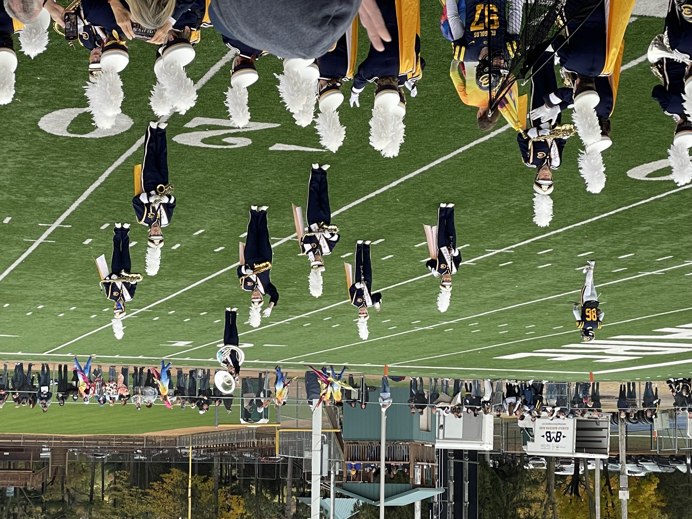

Joy's Education
I received a well-rounded education beginning at Pleasant Ridge Waldorf School (K–8), followed by Laurel High School, a charter school supporting independent and motivated learners. I attended the University of Wisconsin–Stevens Point before transferring to the University of Wisconsin–Eau Claire.
My academic experience has helped me build a strong foundation in design, including graphic design, web design, and video production. I also have experience using Microsoft Office, HTML, Figma and Adobe Creative Suite.
Pleasant Ridge Waldorf School
Viroqua, WI | 2010-2018
K-8 Education. Studies were diverse with a a curriculum that follows the development of the child. Experience in many outdoor activities including camping, canoeing, group activities and many other hands on experiences.
Laurel Charter High School
Viroqua, WI | 2018-2022
Laurel High is connected to the Viroqua Public School and allows driven students to create their own classes and schedules.

University of Wisconsin-Stevens Point
Stevens Point, WI | 2022-2024
Media Studies B.S.
Music Education - Instrumental
University of Wisconsin-Eau Claire
Eau Claire, WI | 2024-Present
Integrated Studies
Emphasis in Music, Multimedia, and Mass Communications
Blugolds Marching Band